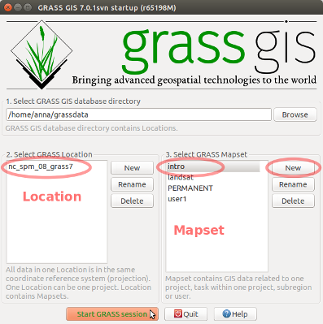
Set the computational extent and resolution of the mapset to match map elev_lid792_1m.
Computational region will be explained later.
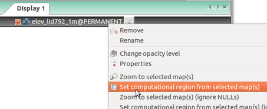
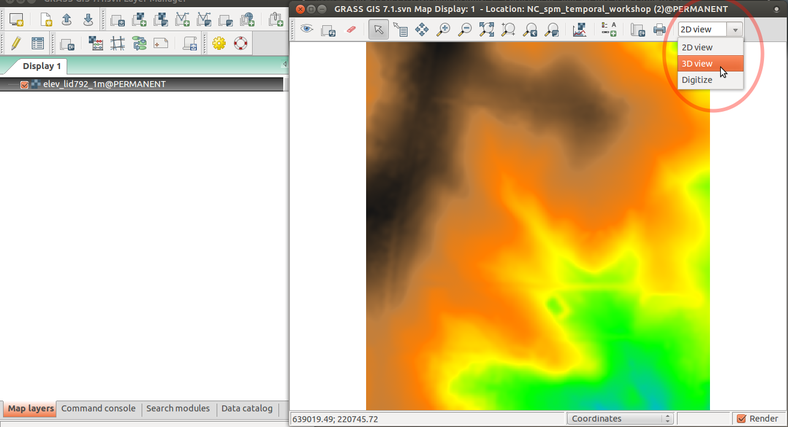
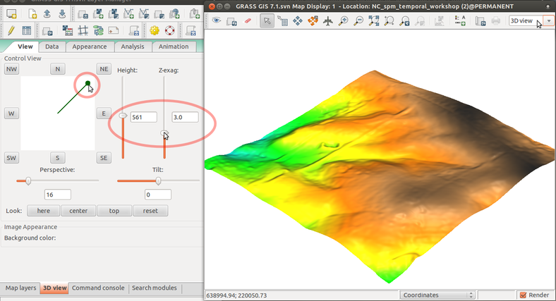
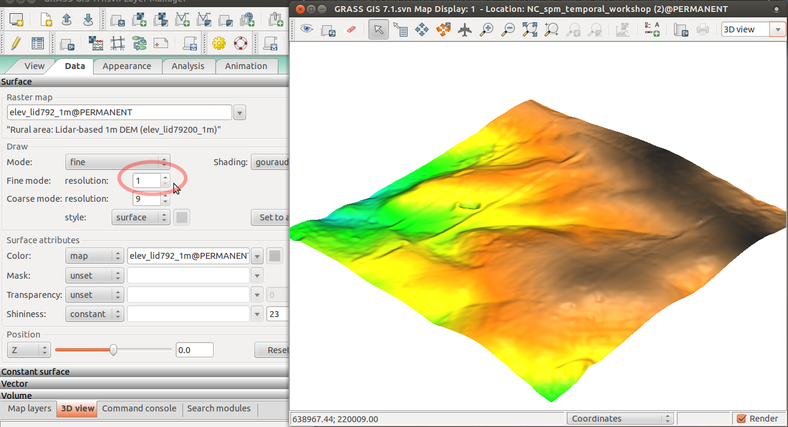
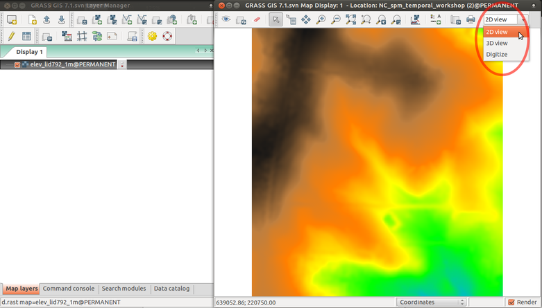
| group | prefix | examples |
|---|---|---|
| general | g.* | g.list, g.remove, g.copy |
| raster | r.* | r.univar, r.neighbors, r.contour |
| vector | v.* | v.info, v.generalize, v.db.select |
| 3D raster | r3.* | r3.info, r3.to.rast, r3.colors |
| temporal | t.* | t.list, t.rast.aggregate, t.vect.univar |
| ... | ... | ... |
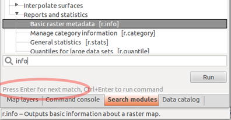
Raster > Reports and statistics > Basic raster metadata
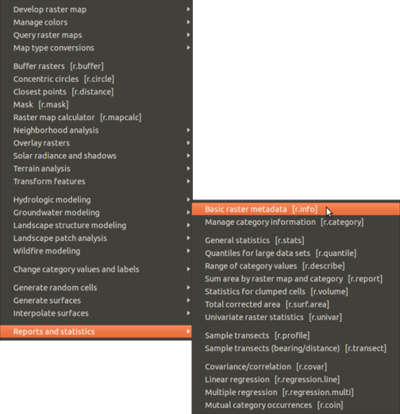
Type beginning of command in Command console
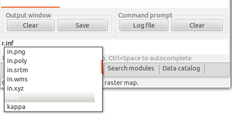
Command console supports auto-completion of maps and parameters.
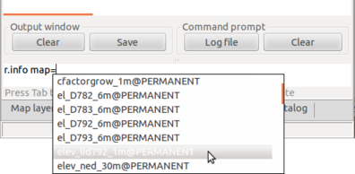
Browse command history using up and down arrows.
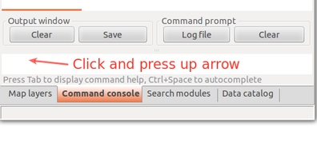
g.region -p north: 220750 south: 220000 west: 638300 east: 639000 nsres: 1 ewres: 1 rows: 750 cols: 700 cells: 525000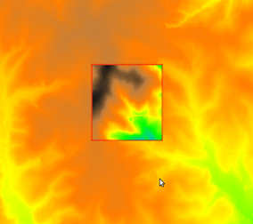
We can set it to match a raster map like this:
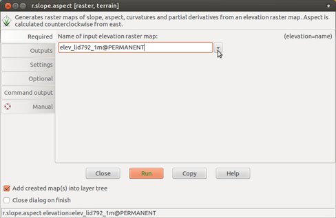
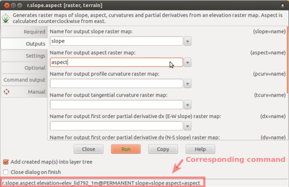
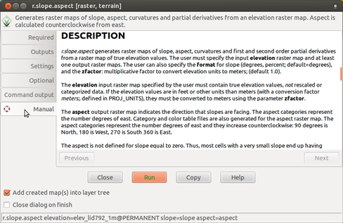
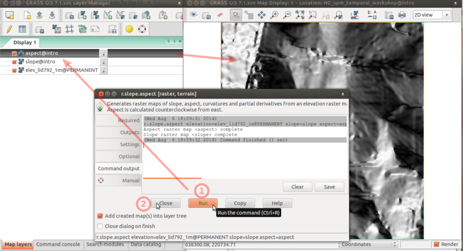
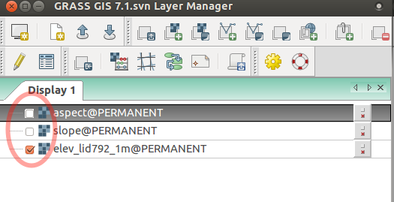
Add vector map streams:
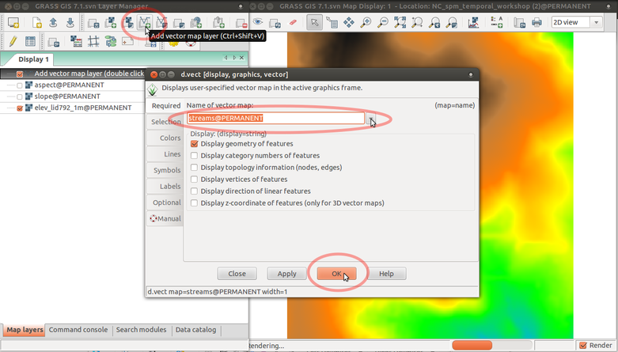
Set resolution and map draped over the surface:
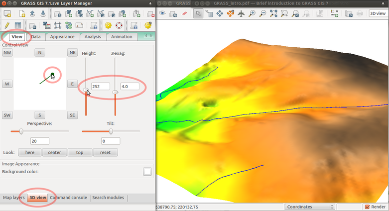
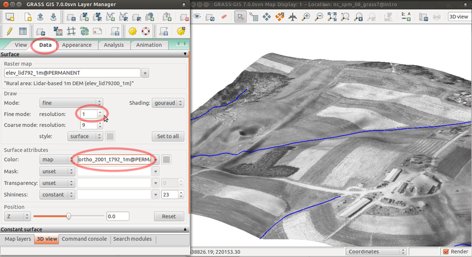
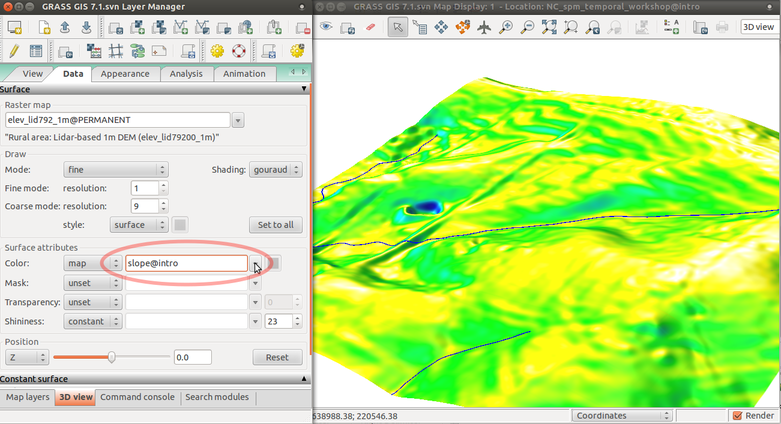
Save picture as TIF or PPM file and then quit GUI:
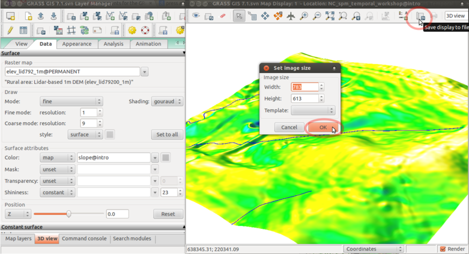
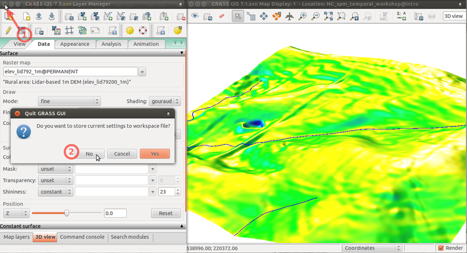
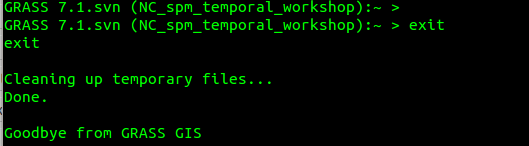